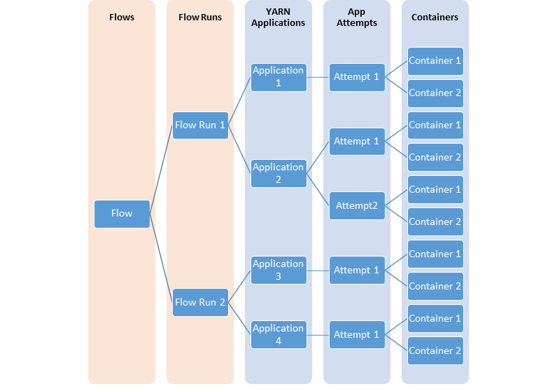
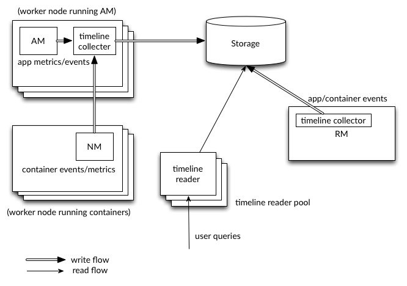

YARN Timeline Service v.2 is the next major iteration of Timeline Server, following v.1 and v.1.5. V.2 is created to address two major challenges of v.1.
V.1 is limited to a single instance of writer/reader and storage, and does not scale well beyond small clusters. V.2 uses a more scalable distributed writer architecture and a scalable backend storage.
YARN Timeline Service v.2 separates the collection (writes) of data from serving (reads) of data. It uses distributed collectors, essentially one collector for each YARN application. The readers are separate instances that are dedicated to serving queries via REST API.
YARN Timeline Service v.2 chooses Apache HBase as the primary backing storage, as Apache HBase scales well to a large size while maintaining good response times for reads and writes.
In many cases, users are interested in information at the level of “flows” or logical groups of YARN applications. It is much more common to launch a set or series of YARN applications to complete a logical application. Timeline Service v.2 supports the notion of flows explicitly. In addition, it supports aggregating metrics at the flow level.
Also, information such as configuration and metrics is treated and supported as first-class citizens.
The following diagrams illustrates the relationship between different YARN entities modelling flows.

YARN Timeline Service v.2 uses a set of collectors (writers) to write data to the backend storage. The collectors are distributed and co-located with the application masters to which they are dedicated. All data that belong to that application are sent to the application level timeline collectors with the exception of the resource manager timeline collector.
For a given application, the application master can write data for the application to the co-located timeline collectors (which is an NM auxiliary service in this release). In addition, node managers of other nodes that are running the containers for the application also write data to the timeline collector on the node that is running the application master.
The resource manager also maintains its own timeline collector. It emits only YARN-generic lifecycle events to keep its volume of writes reasonable.
The timeline readers are separate daemons separate from the timeline collectors, and they are dedicated to serving queries via REST API.
The following diagram illustrates the design at a high level.

A complete end-to-end flow of writes and reads is functional, with Apache HBase as the backend. You should be able to start generating data. When enabled, all YARN-generic events are published as well as YARN system metrics such as CPU and memory. Furthermore, some applications including Distributed Shell and MapReduce can write per-framework data to YARN Timeline Service v.2.
The basic mode of accessing data is via REST. The REST API comes with a good number of useful and flexible query patterns (see below for more information). YARN Client has been integrated with ATSv2. This enables fetching application/attempt/container report from TimelineReader if details are not present in ResouceManager.
The collectors (writers) are currently embedded in the node managers as auxiliary services. The resource manager also has its dedicated in-process collector. The reader is currently a single instance. Currently, it is not possible to write to Timeline Service outside the context of a YARN application (i.e. no off-cluster client).
Kerberos Authentication is supported end to end. All communication to HBase can be kerberized. Refer Security Configuration for configs. Support for simple authorization has been added in terms of a configurable whitelist of users and groups who can read timeline data. Cluster admins are allowed by default to read timeline data.
When YARN Timeline Service v.2 is disabled, one can expect no functional or performance impact on any other existing functionality.
Road map includes
New configuration parameters that are introduced with v.2 are marked bold.
| Configuration Property | Description |
|---|---|
yarn.timeline-service.enabled |
Indicate to clients whether Timeline service is enabled or not. If enabled, the TimelineClient library used by applications will post entities and events to the Timeline server. Defaults to false. |
yarn.timeline-service.version |
Indicate what is the current version of the running timeline service. For example, if “yarn.timeline-service.version” is 1.5, and “yarn.timeline-service.enabled” is true, it means the cluster will and must bring up the timeline service v.1.5 (and nothing else). On the client side, if the client uses the same version of timeline service, it must succeed. If the client chooses to use a smaller version in spite of this, then depending on how robust the compatibility story is between versions, the results may vary. Defaults to 1.0f. |
yarn.timeline-service.writer.class |
The class for the backend storage writer. Defaults to HBase storage writer. |
yarn.timeline-service.reader.class |
The class for the backend storage reader. Defaults to HBase storage reader. |
yarn.system-metrics-publisher.enabled |
The setting that controls whether yarn system metrics is published on the Timeline service or not by RM And NM. Defaults to false. |
yarn.timeline-service.schema.prefix |
The schema prefix for hbase tables. Defaults to “prod.”. |
| Configuration Property | Description |
|---|---|
yarn.timeline-service.hostname |
The hostname of the Timeline service web application. Defaults to 0.0.0.0 |
yarn.timeline-service.reader.webapp.address |
The http address of the Timeline Reader web application. Defaults to ${yarn.timeline-service.hostname}:8188. |
yarn.timeline-service.reader.webapp.https.address |
The https address of the Timeline Reader web application. Defaults to ${yarn.timeline-service.hostname}:8190. |
yarn.timeline-service.reader.bind-host |
The actual address the timeline reader will bind to. If this optional address is set, reader server will bind to this address and the port specified in yarn.timeline-service.reader.webapp.address. This is most useful for making the service listen on all interfaces by setting to 0.0.0.0. |
yarn.timeline-service.hbase.configuration.file |
Optional URL to an hbase-site.xml configuration file to be used to connect to the timeline-service hbase cluster. If empty or not specified, then the HBase configuration will be loaded from the classpath. When specified the values in the specified configuration file will override those from the ones that are present on the classpath. Defaults to null. |
yarn.timeline-service.writer.flush-interval-seconds |
The setting that controls how often the timeline collector flushes the timeline writer. Defaults to 60. |
yarn.timeline-service.app-collector.linger-period.ms |
Time period till which the application collector will be alive in NM, after the application master container finishes. Defaults to 60000 (60 seconds). |
yarn.timeline-service.timeline-client.number-of-async-entities-to-merge |
Time line V2 client tries to merge these many number of async entities (if available) and then call the REST ATS V2 API to submit. Defaults to 10. |
yarn.timeline-service.hbase.coprocessor.app-final-value-retention-milliseconds |
The setting that controls how long the final value of a metric of a completed app is retained before merging into the flow sum. Defaults to 259200000 (3 days). This should be set in the HBase cluster. |
yarn.rm.system-metrics-publisher.emit-container-events |
The setting that controls whether yarn container metrics is published to the timeline server or not by RM. This configuration setting is for ATS V2. Defaults to false. |
yarn.nodemanager.emit-container-events |
The setting that controls whether yarn container metrics is published to the timeline server or not by NM. This configuration setting is for ATS V2. Defaults to true. |
Security can be enabled by setting yarn.timeline-service.http-authentication.type to kerberos, after which the following configuration options are available:
| Configuration Property | Description |
|---|---|
yarn.timeline-service.http-authentication.type |
Defines authentication used for the timeline server(collector/reader) HTTP endpoint. Supported values are: simple / kerberos / #AUTHENTICATION_HANDLER_CLASSNAME#. Defaults to simple. |
yarn.timeline-service.http-authentication.simple.anonymous.allowed |
Indicates if anonymous requests are allowed by the timeline server when using ‘simple’ authentication. Defaults to true. |
yarn.timeline-service.http-authentication.kerberos.principal |
The Kerberos principal to be used for the Timeline Server(Collector/Reader) HTTP endpoint. |
yarn.timeline-service.http-authentication.kerberos.keytab |
The Kerberos keytab to be used for the Timeline Server(Collector/Reader) HTTP endpoint.. |
yarn.timeline-service.principal |
The Kerberos principal for the timeline reader. NM principal would be used for timeline collector as it runs as an auxiliary service inside NM. |
yarn.timeline-service.keytab |
The Kerberos keytab for the timeline reader. NM keytab would be used for timeline collector as it runs as an auxiliary service inside NM. |
yarn.timeline-service.delegation.key.update-interval |
Defaults to 86400000 (1 day). |
yarn.timeline-service.delegation.token.renew-interval |
Defaults to 86400000 (1 day). |
yarn.timeline-service.delegation.token.max-lifetime |
Defaults to 604800000 (7 days). |
yarn.timeline-service.read.authentication.enabled |
Enables or disables authorization checks for reading timeline service v2 data. Default is false which is disabled. |
yarn.timeline-service.read.allowed.users |
Comma separated list of user, followed by space, then comma separated list of groups. It will allow this list of users and groups to read the data and reject everyone else. Default value is set to none. If authorization is enabled, then this configuration is mandatory. |
yarn.webapp.filter-entity-list-by-user |
Default is false. If set true and yarn.timeline-service.read.authentication.enabled is disabled, then listing of entities restricted to remote user entities only. It is YARN common configuration for listing APIs. Using this configuration TimelineReader authorize caller UGI with entity owner. If does not match, those entities will be removed from response. |
To enable cross-origin support (CORS) for the Timeline Service v.2, please set the following configuration parameters:
In yarn-site.xml, set yarn.timeline-service.http-cross-origin.enabled to true.
In core-site.xml, add org.apache.hadoop.security.HttpCrossOriginFilterInitializer to hadoop.http.filter.initializers.
For more configurations used for cross-origin support, refer to HttpAuthentication. Please note that yarn.timeline-service.http-cross-origin.enabled, if set to true, overrides hadoop.http.cross-origin.enabled.
There are a few steps to be done for preparing the storage for Timeline Service v.2:
Step 1) Set up the HBase cluster
Step 2) Enable the coprocessor
Step 3) Create the schema for Timeline Service v.2
Each step is explained in more detail below.
The first part is to set up or pick an Apache HBase cluster to use as the storage cluster. The supported versions of Apache HBase are 1.2.6 (default) and 2.0.0-beta1. The 1.0.x versions do not work with Timeline Service v.2. By default, Hadoop releases are built with HBase 1.2.6. To use HBase 2.0.0-beta1, build from source with option -Dhbase.profile=2.0
HBase has different deployment modes. Refer to the HBase book for understanding them and pick a mode that is suitable for your setup. (http://hbase.apache.org/book.html#standalone_dist)
If you are intent on a simple deploy profile for the Apache HBase cluster where the data loading is light but the data needs to persist across node comings and goings, you could consider the “Standalone HBase over HDFS” deploy mode.
This is a useful variation on the standalone HBase setup and has all HBase daemons running inside one JVM but rather than persisting to the local filesystem, it persists to an HDFS instance. Writing to HDFS where data is replicated ensures that data is persisted across node comings and goings. To configure this standalone variant, edit your hbase-site.xml setting the hbase.rootdir to point at a directory in your HDFS instance but then set hbase.cluster.distributed to false. For example:
<configuration>
<property>
<name>hbase.rootdir</name>
<value>hdfs://namenode.example.org:8020/hbase</value>
</property>
<property>
<name>hbase.cluster.distributed</name>
<value>false</value>
</property>
</configuration>
For more details on this mode, refer to http://hbase.apache.org/book.html#standalone.over.hdfs .
Once you have an Apache HBase cluster ready to use, perform the following steps.
In this version, the coprocessor is loaded dynamically (table coprocessor for the flowrun table).
Copy the timeline service jar to HDFS from where HBase can load it. It is needed for the flowrun table creation in the schema creator. The default HDFS location is /hbase/coprocessor. For example,
hadoop fs -mkdir /hbase/coprocessor
hadoop fs -put hadoop-yarn-server-timelineservice-hbase-coprocessor-3.2.0-SNAPSHOT.jar
/hbase/coprocessor/hadoop-yarn-server-timelineservice.jar
If you want to place the jar at a different location on hdfs, there also exists a yarn configuration setting called yarn.timeline-service.hbase.coprocessor.jar.hdfs.location. For example,
<property> <name>yarn.timeline-service.hbase.coprocessor.jar.hdfs.location</name> <value>/custom/hdfs/path/jarName</value> </property>
The schema creation can be run on the hbase cluster which is going to store the timeline service tables. The schema creator tool requires both the timelineservice-hbase as well as the hbase-server jars. Hence, during schema creation, you need to ensure that the hbase classpath contains the yarn-timelineservice-hbase jar.
On the hbase cluster, you can get it from hdfs since we placed it there for the coprocessor in the step above.
hadoop fs -get /hbase/coprocessor/hadoop-yarn-server-timelineservice-hbase-client-${project.version}.jar <local-dir>/.
hadoop fs -get /hbase/coprocessor/hadoop-yarn-server-timelineservice-${project.version}.jar <local-dir>/.
hadoop fs -get /hbase/coprocessor/hadoop-yarn-server-timelineservice-hbase-common-${project.version}.jar <local-dir>/.
Next, add it to the hbase classpath as follows:
export HBASE_CLASSPATH=$HBASE_CLASSPATH:/home/yarn/hadoop-current/share/hadoop/yarn/timelineservice/hadoop-yarn-server-timelineservice-hbase-client-${project.version}.jar
export HBASE_CLASSPATH=$HBASE_CLASSPATH:/home/yarn/hadoop-current/share/hadoop/yarn/timelineservice/hadoop-yarn-server-timelineservice-${project.version}.jar
export HBASE_CLASSPATH=$HBASE_CLASSPATH:/home/yarn/hadoop-current/share/hadoop/yarn/timelineservice/hadoop-yarn-server-timelineservice-hbase-common-${project.version}.jar
Finally, run the schema creator tool to create the necessary tables:
bin/hbase org.apache.hadoop.yarn.server.timelineservice.storage.TimelineSchemaCreator -create
The TimelineSchemaCreator tool supports a few options that may come handy especially when you are testing. For example, you can use -skipExistingTable (-s for short) to skip existing tables and continue to create other tables rather than failing the schema creation. By default, the tables will have a schema prefix of “prod.”. When no option or ‘-help’ (‘-h’ for short) is provided, the command usage is printed. The options (-entityTableName, -appToflowTableName, -applicationTableName, -subApplicationTableName) will help to override the default table names. On using custom table names, The below corresponding configs with custom table name has to be set in hbase-site.xml configured at yarn.timeline-service.hbase.configuration.file.
yarn.timeline-service.app-flow.table.name yarn.timeline-service.entity.table.name yarn.timeline-service.application.table.name yarn.timeline-service.subapplication.table.name yarn.timeline-service.flowactivity.table.name yarn.timeline-service.flowrun.table.name yarn.timeline-service.domain.table.name
Following are the basic configurations to start Timeline service v.2:
<property> <name>yarn.timeline-service.version</name> <value>2.0f</value> </property> <property> <name>yarn.timeline-service.enabled</name> <value>true</value> </property> <property> <name>yarn.nodemanager.aux-services</name> <value>mapreduce_shuffle,timeline_collector</value> </property> <property> <name>yarn.nodemanager.aux-services.timeline_collector.class</name> <value>org.apache.hadoop.yarn.server.timelineservice.collector.PerNodeTimelineCollectorsAuxService</value> </property> <property> <description>The setting that controls whether yarn system metrics is published on the Timeline service or not by RM And NM.</description> <name>yarn.system-metrics-publisher.enabled</name> <value>true</value> </property>
If using an aux services manifest instead of setting aux services through the Configuration, ensure that the manifest services array includes the timeline_collector service as follows:
{
"services": [
{
"name": "timeline_collector",
"configuration": {
"properties": {
"class.name": "org.apache.hadoop.yarn.server.timelineservice.collector.PerNodeTimelineCollectorsAuxService"
}
}
}
]
}
In addition, you may want to set the YARN cluster name to a reasonably unique value in case you are using multiple clusters to store data in the same Apache HBase storage:
<property> <name>yarn.resourcemanager.cluster-id</name> <value>my_research_test_cluster</value> </property>
Also, add the hbase-site.xml configuration file to the client Hadoop cluster configuration so that it can write data to the Apache HBase cluster you are using, or set yarn.timeline-service.hbase.configuration.file to the file URL pointing to hbase-site.xml for the same. For example:
<property> <description> Optional URL to an hbase-site.xml configuration file to be used to connect to the timeline-service hbase cluster. If empty or not specified, then the HBase configuration will be loaded from the classpath. When specified the values in the specified configuration file will override those from the ones that are present on the classpath. </description> <name>yarn.timeline-service.hbase.configuration.file</name> <value>file:/etc/hbase/hbase-ats-dc1/hbase-site.xml</value> </property>
To configure both Timeline Service 1.5 and v.2, add the following property
<property> <name>yarn.timeline-service.versions</name> <value>1.5f,2.0f</value> </property>
If the above is not configured, then it defaults to the version set in yarn.timeline-service.version
Restart the resource manager as well as the node managers to pick up the new configuration. The collectors start within the resource manager and the node managers in an embedded manner.
The Timeline Service reader is a separate YARN daemon, and it can be started using the following syntax:
$ yarn-daemon.sh start timelinereader
To write MapReduce framework data to Timeline Service v.2, enable the following configuration in mapred-site.xml:
<property> <name>mapreduce.job.emit-timeline-data</name> <value>true</value> </property>
If you are currently running Timeline Service v2 alpha1 version, we recommend the following:
Clear existing data in tables (truncate tables) since the row key for AppToFlow has changed.
The coprocessor is now a dynamically loaded table level coprocessor in GA. We recommend dropping the table, replacing the coprocessor jar on hdfs with the GA one, restarting the Region servers and recreating the flowrun table.
This section is for YARN application developers that want to integrate with Timeline Service v.2.
Developers need to use the TimelineV2Client API to publish per-framework data to the Timeline Service v.2. The entity/object API for v.2 is different than v.1 as the object model is significantly changed. The v.2 timeline entity class is org.apache.hadoop.yarn.api.records.timelineservice.TimelineEntity.
Timeline Service v.2 putEntities methods come in 2 varieties: putEntities and putEntitiesAsync. The former is a blocking operation which must be used for writing more critical data (e.g. lifecycle events). The latter is a non-blocking operation. Note that neither has a return value.
Creating a TimelineV2Client involves passing in the application id to the static method TimelineV2Client.createTimelineClient.
For example:
// Create and start the Timeline client v.2
TimelineV2Client timelineClient =
TimelineV2Client.createTimelineClient(appId);
timelineClient.init(conf);
timelineClient.start();
try {
TimelineEntity myEntity = new TimelineEntity();
myEntity.setType("MY_APPLICATION");
myEntity.setId("MyApp1");
// Compose other entity info
// Blocking write
timelineClient.putEntities(myEntity);
TimelineEntity myEntity2 = new TimelineEntity();
// Compose other info
// Non-blocking write
timelineClient.putEntitiesAsync(myEntity2);
} catch (IOException | YarnException e) {
// Handle the exception
} finally {
// Stop the Timeline client
timelineClient.stop();
}
As evidenced above, you need to specify the YARN application id to be able to write to the Timeline Service v.2. Note that currently you need to be on the cluster to be able to write to the Timeline Service. For example, an application master or code in the container can write to the Timeline Service, while an off-cluster MapReduce job submitter cannot.
After creating the timeline v2 client, user also needs to set the timeline collector info which contains the collector address and collector token(only in secure mode) for the application. If AMRMClient is used then by registering the timeline client by calling AMRMClient#registerTimelineV2Client is sufficient.
amRMClient.registerTimelineV2Client(timelineClient);
Else address needs to be retrieved from the AM allocate response and need to be set in timeline client explicitly.
timelineClient.setTimelineCollectorInfo(response.getCollectorInfo());
You can create and publish your own entities, events, and metrics as with previous versions.
TimelineEntity objects have the following fields to hold timeline data:
Note that when posting timeline metrics, one may choose how each metric should be aggregated through the TimelineMetric#setRealtimeAggregationOp() method. The word “aggregate” here means applying one of the TimelineMetricOperation for a set of entities. Timeline service v2 provides built-in application level aggregation, which means aggregating metrics from different timeline entities within one YARN application. Right now, there are two kinds of operations supported in TimelineMetricOperation:
MAX: Getting the maximum value among all TimelineMetric objects.SUM: Getting the sum of all TimelineMetric objects.By default, the NOP operation means not performing any real-time aggregation operation.
Application frameworks must set the “flow context” whenever possible in order to take advantage of the flow support Timeline Service v.2 provides. The flow context consists of the following:
If the flow context is not specified, defaults are supplied for these attributes:
You can provide the flow context via YARN application tags:
ApplicationSubmissionContext appContext = app.getApplicationSubmissionContext();
// set the flow context as YARN application tags
Set<String> tags = new HashSet<>();
tags.add(TimelineUtils.generateFlowNameTag("distributed grep"));
tags.add(Timelineutils.generateFlowVersionTag("3df8b0d6100530080d2e0decf9e528e57c42a90a"));
tags.add(TimelineUtils.generateFlowRunIdTag(System.currentTimeMillis()));
appContext.setApplicationTags(tags);
Note : The Resource Manager converts YARN application tags to lowercase before storing them. Hence one should convert Flow names and Flow versions to lowercase before using them in REST API queries.
Querying Timeline Service v.2 is currently only supported via REST API; there is no API client implemented in the YARN libraries.
The v.2 REST API is implemented at under the path, /ws/v2/timeline/ on the Timeline Service web service.
Here is an informal description of the API.
GET /ws/v2/timeline/
Returns a JSON object describing the service instance and version information.
{
"About":"Timeline Reader API",
"timeline-service-version":"3.0.0-alpha1-SNAPSHOT",
"timeline-service-build-version":"3.0.0-alpha1-SNAPSHOT from fb0acd08e6f0b030d82eeb7cbfa5404376313e60 by sjlee source checksum be6cba0e42417d53be16459e1685e7",
"timeline-service-version-built-on":"2016-04-11T23:15Z",
"hadoop-version":"3.0.0-alpha1-SNAPSHOT",
"hadoop-build-version":"3.0.0-alpha1-SNAPSHOT from fb0acd08e6f0b030d82eeb7cbfa5404376313e60 by sjlee source checksum ee968fd0aedcc7384230ee3ca216e790",
"hadoop-version-built-on":"2016-04-11T23:14Z"
}
The following shows the supported queries on the REST API.
With Query Flows API, you can retrieve a list of active flows that had runs most recently. If the REST endpoint without the cluster name is used, the cluster specified by the configuration yarn.resourcemanager.cluster-id in yarn-site.xml is taken. If none of the flows match the predicates, an empty list will be returned.
GET /ws/v2/timeline/clusters/{cluster name}/flows/
or
GET /ws/v2/timeline/flows/
limit - If specified, defines the number of flows to return. The maximum possible value for limit is maximum value of Long. If it is not specified or has a value less than 0, then limit will be considered as 100.daterange - If specified is given as “[startdate]-[enddate]”(i.e. start and end date separated by “-”) or single date. Dates are interpreted in the yyyyMMdd format and are assumed to be in UTC. If a single date is specified, all flows active on that date are returned. If both startdate and enddate is given, all flows active between start and end date will be returned. If only startdate is given, flows active on and after startdate are returned. If only enddate is given, flows active on and before enddate are returned.fromid - If specified, retrieve the next set of flows from the given fromid. The set of entities retrieved is inclusive of specified fromid. fromid should be taken from the value associated with FROM_ID info key in flow entity response which was sent earlier.[
{
"metrics": [],
"events": [],
"id": "test-cluster/1460419200000/sjlee@ds-date",
"type": "YARN_FLOW_ACTIVITY",
"createdtime": 0,
"flowruns": [
{
"metrics": [],
"events": [],
"id": "sjlee@ds-date/1460420305659",
"type": "YARN_FLOW_RUN",
"createdtime": 0,
"info": {
"SYSTEM_INFO_FLOW_VERSION": "1",
"SYSTEM_INFO_FLOW_RUN_ID": 1460420305659,
"SYSTEM_INFO_FLOW_NAME": "ds-date",
"SYSTEM_INFO_USER": "sjlee"
},
"isrelatedto": {},
"relatesto": {}
},
{
"metrics": [],
"events": [],
"id": "sjlee@ds-date/1460420587974",
"type": "YARN_FLOW_RUN",
"createdtime": 0,
"info": {
"SYSTEM_INFO_FLOW_VERSION": "1",
"SYSTEM_INFO_FLOW_RUN_ID": 1460420587974,
"SYSTEM_INFO_FLOW_NAME": "ds-date",
"SYSTEM_INFO_USER": "sjlee"
},
"isrelatedto": {},
"relatesto": {}
}
],
"info": {
"SYSTEM_INFO_CLUSTER": "test-cluster",
"UID": "test-cluster!sjlee!ds-date",
"FROM_ID": "test-cluster!1460419200000!sjlee!ds-date",
"SYSTEM_INFO_FLOW_NAME": "ds-date",
"SYSTEM_INFO_DATE": 1460419200000,
"SYSTEM_INFO_USER": "sjlee"
},
"isrelatedto": {},
"relatesto": {}
}
]
With Query Flow Runs API, you can drill further down to get the runs (specific instances) of a given flow. This returns the most recent runs that belong to the given flow. If the REST endpoint without the cluster name is used, the cluster specified by the configuration yarn.resourcemanager.cluster-id in yarn-site.xml is taken. If none of the flow runs match the predicates, an empty list will be returned.
GET /ws/v2/timeline/clusters/{cluster name}/users/{user name}/flows/{flow name}/runs/
or
GET /ws/v2/timeline/users/{user name}/flows/{flow name}/runs/
limit - If specified, defines the number of flows to return. The maximum possible value for limit is maximum value of Long. If it is not specified or has a value less than 0, then limit will be considered as 100.createdtimestart - If specified, then only flow runs started after this timestamp are returned.createdtimeend - If specified, then only flow runs started before this timestamp are returned.metricstoretrieve - If specified, defines which metrics to retrieve or which ones not to retrieve and send back in response. metricstoretrieve can be an expression of the form :METRICS is specified in fields query param or not. Please note that URL unsafe characters such as spaces will have to be suitably encoded.fields - Specifies which fields to retrieve. For querying flow runs, only ALL or METRICS are valid fields. Other fields will lead to HTTP 400 (Bad Request) response. If not specified, in response, id, type, createdtime and info fields will be returned.fromid - If specified, retrieve the next set of flow run entities from the given fromid. The set of entities retrieved is inclusive of specified fromid. fromid should be taken from the value associated with FROM_ID info key in flow entity response which was sent earlier.[
{
"metrics": [],
"events": [],
"id": "sjlee@ds-date/1460420587974",
"type": "YARN_FLOW_RUN",
"createdtime": 1460420587974,
"info": {
"UID": "test-cluster!sjlee!ds-date!1460420587974",
"FROM_ID": "test-cluster!sjlee!ds-date!1460420587974",
"SYSTEM_INFO_FLOW_RUN_ID": 1460420587974,
"SYSTEM_INFO_FLOW_NAME": "ds-date",
"SYSTEM_INFO_FLOW_RUN_END_TIME": 1460420595198,
"SYSTEM_INFO_USER": "sjlee"
},
"isrelatedto": {},
"relatesto": {}
},
{
"metrics": [],
"events": [],
"id": "sjlee@ds-date/1460420305659",
"type": "YARN_FLOW_RUN",
"createdtime": 1460420305659,
"info": {
"UID": "test-cluster!sjlee!ds-date!1460420305659",
"FROM_ID": "test-cluster!sjlee!ds-date!1460420305659",
"SYSTEM_INFO_FLOW_RUN_ID": 1460420305659,
"SYSTEM_INFO_FLOW_NAME": "ds-date",
"SYSTEM_INFO_FLOW_RUN_END_TIME": 1460420311966,
"SYSTEM_INFO_USER": "sjlee"
},
"isrelatedto": {},
"relatesto": {}
}
]
With this API, you can query a specific flow run identified by cluster, user, flow name and run id. If the REST endpoint without the cluster name is used, the cluster specified by the configuration yarn.resourcemanager.cluster-id in yarn-site.xml is taken. Metrics are returned by default while querying individual flow runs.
GET /ws/v2/timeline/clusters/{cluster name}/users/{user name}/flows/{flow name}/runs/{run id}
or
GET /ws/v2/timeline/users/{user name}/flows/{flow name}/runs/{run id}
metricstoretrieve - If specified, defines which metrics to retrieve or which ones not to retrieve and send back in response. metricstoretrieve can be an expression of the form :{
"metrics": [
{
"type": "SINGLE_VALUE",
"id": "org.apache.hadoop.mapreduce.lib.input.FileInputFormatCounter:BYTES_READ",
"aggregationOp": "NOP",
"values": {
"1465246377261": 118
}
},
{
"type": "SINGLE_VALUE",
"id": "org.apache.hadoop.mapreduce.lib.output.FileOutputFormatCounter:BYTES_WRITTEN",
"aggregationOp": "NOP",
"values": {
"1465246377261": 97
}
}
],
"events": [],
"id": "varun@QuasiMonteCarlo/1465246348599",
"type": "YARN_FLOW_RUN",
"createdtime": 1465246348599,
"isrelatedto": {},
"info": {
"UID":"yarn-cluster!varun!QuasiMonteCarlo!1465246348599",
"FROM_ID":"yarn-cluster!varun!QuasiMonteCarlo!1465246348599",
"SYSTEM_INFO_FLOW_RUN_END_TIME":1465246378051,
"SYSTEM_INFO_FLOW_NAME":"QuasiMonteCarlo",
"SYSTEM_INFO_USER":"varun",
"SYSTEM_INFO_FLOW_RUN_ID":1465246348599
},
"relatesto": {}
}
With this API, you can query all the YARN applications that are part of a specific flow. If the REST endpoint without the cluster name is used, the cluster specified by the configuration yarn.resourcemanager.cluster-id in yarn-site.xml is taken. If the number of matching applications are more than the limit, the most recent apps up to the limit will be returned. If none of the apps match the predicates, an empty list will be returned.
GET /ws/v2/timeline/clusters/{cluster name}/users/{user name}/flows/{flow name}/apps
or
GET /ws/v2/timeline/users/{user name}/flows/{flow name}/apps
limit - If specified, defines the number of applications to return. The maximum possible value for limit is maximum value of Long. If it is not specified or has a value less than 0, then limit will be considered as 100.createdtimestart - If specified, then only applications created after this timestamp are returned.createdtimeend - If specified, then only applications created before this timestamp are returned.relatesto - If specified, matched applications must relate to or not relate to given entities associated with a entity type. relatesto is represented as an expression of the form :isrelatedto - If specified, matched applications must be related to or not related to given entities associated with a entity type. isrelatedto is represented in the same form as relatesto.infofilters - If specified, matched applications must have exact matches to the given info key and must be either equal or not equal to given value. The info key is a string but value can be any object. infofilters are represented as an expression of the form :conffilters - If specified, matched applications must have exact matches to the given config name and must be either equal or not equal to the given config value. Both the config name and value must be strings. conffilters are represented in the same form as infofilters.metricfilters - If specified, matched applications must have exact matches to the given metric and satisfy the specified relation with the metric value. Metric id must be a string and metric value must be an integral value. metricfilters are represented as an expression of the form :eventfilters - If specified, matched applications must contain or not contain the given events depending on the expression. eventfilters is represented as an expression of the form :metricstoretrieve - If specified, defines which metrics to retrieve or which ones not to retrieve and send back in response. metricstoretrieve can be an expression of the form :METRICS is specified in fields query param or not. Please note that URL unsafe characters such as spaces will have to be suitably encoded.confstoretrieve - If specified, defines which configs to retrieve or which ones not to retrieve and send back in response. confstoretrieve can be an expression of the form :CONFIGS is specified in fields query param or not. Please note that URL unsafe characters such as spaces will have to be suitably encoded.fields - Specifies which fields to retrieve. Possible values for fields can be EVENTS, INFO, CONFIGS, METRICS, RELATES_TO, IS_RELATED_TO and ALL. All fields will be retrieved if ALL is specified. Multiple fields can be specified as a comma-separated list. If fields is not specified, in response, app id, type (equivalent to YARN_APPLICATION), app createdtime and UID in info field will be returned.metricslimit - If specified, defines the number of metrics to return. Considered only if fields contains METRICS/ALL or metricstoretrieve is specified. Ignored otherwise. The maximum possible value for metricslimit can be maximum value of Integer. If it is not specified or has a value less than 1, and metrics have to be retrieved, then metricslimit will be considered as 1 i.e. latest single value of metric(s) will be returned.metricstimestart - If specified, then metrics for the entity after this timestamp are returned.metricstimeend - If specified, then metrics for the entity before this timestamp are returned.fromid - If specified, retrieve the next set of application entities from the given fromid. The set of entities retrieved is inclusive of specified fromid. fromid should be taken from the value associated with FROM_ID info key in flow entity response which was sent earlier.[
{
"metrics": [ ],
"events": [ ],
"type": "YARN_APPLICATION",
"id": "application_1465246237936_0001",
"createdtime": 1465246348599,
"isrelatedto": { },
"configs": { },
"info": {
"UID": "yarn-cluster!application_1465246237936_0001"
"FROM_ID": "yarn-cluster!varun!QuasiMonteCarlo!1465246348599!application_1465246237936_0001",
},
"relatesto": { }
},
{
"metrics": [ ],
"events": [ ],
"type": "YARN_APPLICATION",
"id": "application_1464983628730_0005",
"createdtime": 1465033881959,
"isrelatedto": { },
"configs": { },
"info": {
"UID": "yarn-cluster!application_1464983628730_0005"
"FROM_ID": "yarn-cluster!varun!QuasiMonteCarlo!1465246348599!application_1464983628730_0005",
},
"relatesto": { }
}
]
With this API, you can query all the YARN applications that are part of a specific flow run. If the REST endpoint without the cluster name is used, the cluster specified by the configuration yarn.resourcemanager.cluster-id in yarn-site.xml is taken. If number of matching applications are more than the limit, the most recent apps up to the limit will be returned. If none of the apps match the predicates, an empty list will be returned.
GET /ws/v2/timeline/clusters/{cluster name}/users/{user name}/flows/{flow name}/runs/{run id}/apps
or
GET /ws/v2/timeline/users/{user name}/flows/{flow name}/runs/{run id}/apps/
limit - If specified, defines the number of applications to return. The maximum possible value for limit is maximum value of Long. If it is not specified or has a value less than 0, then limit will be considered as 100.createdtimestart - If specified, then only applications created after this timestamp are returned.createdtimeend - If specified, then only applications created before this timestamp are returned.relatesto - If specified, matched applications must relate to or not relate to given entities associated with a entity type. relatesto is represented as an expression of the form :isrelatedto - If specified, matched applications must be related to or not related to given entities associated with a entity type. isrelatedto is represented in the same form as relatesto.infofilters - If specified, matched applications must have exact matches to the given info key and must be either equal or not equal to given value. The info key is a string but value can be any object. infofilters are represented as an expression of the form :conffilters - If specified, matched applications must have exact matches to the given config name and must be either equal or not equal to the given config value. Both the config name and value must be strings. conffilters are represented in the same form as infofilters.metricfilters - If specified, matched applications must have exact matches to the given metric and satisfy the specified relation with the metric value. Metric id must be a string and metric value must be an integral value. metricfilters are represented as an expression of the form :eventfilters - If specified, matched applications must contain or not contain the given events depending on the expression. eventfilters is represented as an expression of the form :metricstoretrieve - If specified, defines which metrics to retrieve or which ones not to retrieve and send back in response. metricstoretrieve can be an expression of the form :METRICS is specified in fields query param or not. Please note that URL unsafe characters such as spaces will have to be suitably encoded.confstoretrieve - If specified, defines which configs to retrieve or which ones not to retrieve and send back in response. confstoretrieve can be an expression of the form :CONFIGS is specified in fields query param or not. Please note that URL unsafe characters such as spaces will have to be suitably encoded.fields - Specifies which fields to retrieve. Possible values for fields can be EVENTS, INFO, CONFIGS, METRICS, RELATES_TO, IS_RELATED_TO and ALL. All fields will be retrieved if ALL is specified. Multiple fields can be specified as a comma-separated list. If fields is not specified, in response, app id, type (equivalent to YARN_APPLICATION), app createdtime and UID in info field will be returned.metricslimit - If specified, defines the number of metrics to return. Considered only if fields contains METRICS/ALL or metricstoretrieve is specified. Ignored otherwise. The maximum possible value for metricslimit can be maximum value of Integer. If it is not specified or has a value less than 1, and metrics have to be retrieved, then metricslimit will be considered as 1 i.e. latest single value of metric(s) will be returned.metricstimestart - If specified, then metrics for the entity after this timestamp are returned.metricstimeend - If specified, then metrics for the entity before this timestamp are returned.fromid - If specified, retrieve the next set of application entities from the given fromid. The set of entities retrieved is inclusive of specified fromid. fromid should be taken from the value associated with FROM_ID info key in flow entity response which was sent earlier.[
{
"metrics": [],
"events": [],
"id": "application_1460419579913_0002",
"type": "YARN_APPLICATION",
"createdtime": 1460419580171,
"info": {
"UID": "test-cluster!sjlee!ds-date!1460419580171!application_1460419579913_0002"
"FROM_ID": "test-cluster!sjlee!ds-date!1460419580171!application_1460419579913_0002",
},
"configs": {},
"isrelatedto": {},
"relatesto": {}
}
]
With this API, you can query a single YARN application identified by the cluster and the application ID. If the REST endpoint without the cluster name is used, the cluster specified by the configuration yarn.resourcemanager.cluster-id in yarn-site.xml is taken. Flow context information i.e. user, flow name and run id are not mandatory but if specified in query param can preclude the need for an additional operation to fetch flow context information based on cluster and app id.
GET /ws/v2/timeline/clusters/{cluster name}/apps/{app id}
or
GET /ws/v2/timeline/apps/{app id}
userid - If specified, only applications belonging to this user will be returned. This query param must be specified along with flowname and flowrunid query params, otherwise it will be ignored. If userid, flowname and flowrunid are not specified, we would have to fetch flow context information based on cluster and appid while executing the query.flowname - Only applications belonging to this flowname will be returned. This query param must be specified along with userid and flowrunid query params, otherwise it will be ignored. If userid, flowname and flowrunid are not specified, we would have to fetch flow context information based on cluster and appid while executing the query.flowrunid - Only applications belonging to this flow run id will be returned. This query param must be specified along with userid and flowname query params, otherwise it will be ignored. If userid, flowname and flowrunid are not specified, we would have to fetch flow context information based on cluster and appid while executing the query.metricstoretrieve - If specified, defines which metrics to retrieve or which ones not to retrieve and send back in response. metricstoretrieve can be an expression of the form :METRICS is specified in fields query param or not. Please note that URL unsafe characters such as spaces will have to be suitably encoded.confstoretrieve - If specified, defines which configs to retrieve or which ones not to retrieve and send back in response. confstoretrieve can be an expression of the form :CONFIGS is specified in fields query param or not. Please note that URL unsafe characters such as spaces will have to be suitably encoded.fields - Specifies which fields to retrieve. Possible values for fields can be EVENTS, INFO, CONFIGS, METRICS, RELATES_TO, IS_RELATED_TO and ALL. All fields will be retrieved if ALL is specified. Multiple fields can be specified as a comma-separated list. If fields is not specified, in response, app id, type (equivalent to YARN_APPLICATION), app createdtime and UID in info field will be returned.metricslimit - If specified, defines the number of metrics to return. Considered only if fields contains METRICS/ALL or metricstoretrieve is specified. Ignored otherwise. The maximum possible value for metricslimit can be maximum value of Integer. If it is not specified or has a value less than 1, and metrics have to be retrieved, then metricslimit will be considered as 1 i.e. latest single value of metric(s) will be returned.metricstimestart - If specified, then metrics for the entity after this timestamp are returned.metricstimeend - If specified, then metrics for the entity before this timestamp are returned.{
"metrics": [],
"events": [],
"id": "application_1460419579913_0002",
"type": "YARN_APPLICATION",
"createdtime": 1460419580171,
"info": {
"UID": "test-cluster!sjlee!ds-date!1460419580171!application_1460419579913_0002"
},
"configs": {},
"isrelatedto": {},
"relatesto": {}
}
With this API, you can query generic entities identified by cluster ID, application ID and per-framework entity type. If the REST endpoint without the cluster name is used, the cluster specified by the configuration yarn.resourcemanager.cluster-id in yarn-site.xml is taken. Flow context information i.e. user, flow name and run id are not mandatory but if specified in query param can preclude the need for an additional operation to fetch flow context information based on cluster and app id. If number of matching entities are more than the limit, the most recent entities up to the limit will be returned. This endpoint can be used to query containers, application attempts or any other generic entity which clients put into the backend. For instance, we can query containers by specifying entity type as YARN_CONTAINER and application attempts by specifying entity type as YARN_APPLICATION_ATTEMPT. If none of the entities match the predicates, an empty list will be returned.
GET /ws/v2/timeline/clusters/{cluster name}/apps/{app id}/entities/{entity type}
or
GET /ws/v2/timeline/apps/{app id}/entities/{entity type}
userid - If specified, only entities belonging to this user will be returned. This query param must be specified along with flowname and flowrunid query params, otherwise it will be ignored. If userid, flowname and flowrunid are not specified, we would have to fetch flow context information based on cluster and appid while executing the query.flowname - If specified, only entities belonging to this flowname will be returned. This query param must be specified along with userid and flowrunid query params, otherwise it will be ignored. If userid, flowname and flowrunid are not specified, we would have to fetch flow context information based on cluster and appid while executing the query.flowrunid - If specified, only entities belonging to this flow run id will be returned. This query param must be specified along with userid and flowname query params, otherwise it will be ignored. If userid, flowname and flowrunid are not specified, we would have to fetch flow context information based on cluster and appid while executing the query.limit - If specified, defines the number of entities to return. The maximum possible value for limit is maximum value of Long. If it is not specified or has a value less than 0, then limit will be considered as 100.createdtimestart - If specified, then only entities created after this timestamp are returned.createdtimeend - If specified, then only entities created before this timestamp are returned.relatesto - If specified, matched entities must relate to or not relate to given entities associated with a entity type. relatesto is represented as an expression of the form :isrelatedto - If specified, matched entities must be related to or not related to given entities associated with a entity type. isrelatedto is represented in the same form as relatesto.infofilters - If specified, matched entities must have exact matches to the given info key and must be either equal or not equal to given value. The info key is a string but value can be any object. infofilters are represented as an expression of the form :conffilters - If specified, matched entities must have exact matches to the given config name and must be either equal or not equal to the given config value. Both the config name and value must be strings. conffilters are represented in the same form as infofilters.metricfilters - If specified, matched entities must have exact matches to the given metric and satisfy the specified relation with the metric value. Metric id must be a string and metric value must be an integral value. metricfilters are represented as an expression of the form :eventfilters - If specified, matched entities must contain or not contain the given events depending on the expression. eventfilters is represented as an expression of the form :metricstoretrieve - If specified, defines which metrics to retrieve or which ones not to retrieve and send back in response. metricstoretrieve can be an expression of the form :METRICS is specified in fields query param or not. Please note that URL unsafe characters such as spaces will have to be suitably encoded.confstoretrieve - If specified, defines which configs to retrieve or which ones not to retrieve and send back in response. confstoretrieve can be an expression of the form :CONFIGS is specified in fields query param or not. Please note that URL unsafe characters such as spaces will have to be suitably encoded.fields - Specifies which fields to retrieve. Possible values for fields can be EVENTS, INFO, CONFIGS, METRICS, RELATES_TO, IS_RELATED_TO and ALL. All fields will be retrieved if ALL is specified. Multiple fields can be specified as a comma-separated list. If fields is not specified, in response, entity id, entity type, createdtime and UID in info field will be returned.metricslimit - If specified, defines the number of metrics to return. Considered only if fields contains METRICS/ALL or metricstoretrieve is specified. Ignored otherwise. The maximum possible value for metricslimit can be maximum value of Integer. If it is not specified or has a value less than 1, and metrics have to be retrieved, then metricslimit will be considered as 1 i.e. latest single value of metric(s) will be returned.metricstimestart - If specified, then metrics for the entity after this timestamp are returned.metricstimeend - If specified, then metrics for the entity before this timestamp are returned.fromid - If specified, retrieve the next set of generic entities from the given fromid. The set of entities retrieved is inclusive of specified fromid. fromid should be taken from the value associated with FROM_ID info key in flow entity response which was sent earlier.[
{
"metrics": [ ],
"events": [ ],
"type": "YARN_APPLICATION_ATTEMPT",
"id": "appattempt_1465246237936_0001_000001",
"createdtime": 1465246358873,
"isrelatedto": { },
"configs": { },
"info": {
"UID": "yarn-cluster!application_1465246237936_0001!YARN_APPLICATION_ATTEMPT!appattempt_1465246237936_0001_000001"
"FROM_ID": "yarn-cluster!sjlee!ds-date!1460419580171!application_1465246237936_0001!YARN_APPLICATION_ATTEMPT!0!appattempt_1465246237936_0001_000001"
},
"relatesto": { }
},
{
"metrics": [ ],
"events": [ ],
"type": "YARN_APPLICATION_ATTEMPT",
"id": "appattempt_1465246237936_0001_000002",
"createdtime": 1465246359045,
"isrelatedto": { },
"configs": { },
"info": {
"UID": "yarn-cluster!application_1465246237936_0001!YARN_APPLICATION_ATTEMPT!appattempt_1465246237936_0001_000002"
"FROM_ID": "yarn-cluster!sjlee!ds-date!1460419580171!application_1465246237936_0001!YARN_APPLICATION_ATTEMPT!0!appattempt_1465246237936_0001_000002"
},
"relatesto": { }
}
]
With this API, you can query generic entities per user identified by cluster ID, doAsUser and entity type. If the REST endpoint without the cluster name is used, the cluster specified by the configuration yarn.resourcemanager.cluster-id in yarn-site.xml is taken. If number of matching entities are more than the limit, the most recent entities up to the limit will be returned. This endpoint can be used to query generic entity which clients put into the backend. For instance, we can query user entities by specifying entity type as TEZ_DAG_ID. If none of the entities match the predicates, an empty list will be returned. Note : As of today, we can query only those entities which are published with doAsUser which is different from application owner.
GET /ws/v2/timeline/clusters/{cluster name}/users/{userid}/entities/{entitytype}
or
GET /ws/v2/timeline/users/{userid}/entities/{entitytype}
limit - If specified, defines the number of entities to return. The maximum possible value for limit is maximum value of Long. If it is not specified or has a value less than 0, then limit will be considered as 100.createdtimestart - If specified, then only entities created after this timestamp are returned.createdtimeend - If specified, then only entities created before this timestamp are returned.relatesto - If specified, matched entities must relate to or not relate to given entities associated with a entity type. relatesto is represented as an expression of the form :isrelatedto - If specified, matched entities must be related to or not related to given entities associated with a entity type. isrelatedto is represented in the same form as relatesto.infofilters - If specified, matched entities must have exact matches to the given info key and must be either equal or not equal to given value. The info key is a string but value can be any object. infofilters are represented as an expression of the form :conffilters - If specified, matched entities must have exact matches to the given config name and must be either equal or not equal to the given config value. Both the config name and value must be strings. conffilters are represented in the same form as infofilters.metricfilters - If specified, matched entities must have exact matches to the given metric and satisfy the specified relation with the metric value. Metric id must be a string and metric value must be an integral value. metricfilters are represented as an expression of the form :eventfilters - If specified, matched entities must contain or not contain the given events depending on the expression. eventfilters is represented as an expression of the form :metricstoretrieve - If specified, defines which metrics to retrieve or which ones not to retrieve and send back in response. metricstoretrieve can be an expression of the form :METRICS is specified in fields query param or not. Please note that URL unsafe characters such as spaces will have to be suitably encoded.confstoretrieve - If specified, defines which configs to retrieve or which ones not to retrieve and send back in response. confstoretrieve can be an expression of the form :CONFIGS is specified in fields query param or not. Please note that URL unsafe characters such as spaces will have to be suitably encoded.fields - Specifies which fields to retrieve. Possible values for fields can be EVENTS, INFO, CONFIGS, METRICS, RELATES_TO, IS_RELATED_TO and ALL. All fields will be retrieved if ALL is specified. Multiple fields can be specified as a comma-separated list. If fields is not specified, in response, entity id, entity type, createdtime and UID in info field will be returned.metricslimit - If specified, defines the number of metrics to return. Considered only if fields contains METRICS/ALL or metricstoretrieve is specified. Ignored otherwise. The maximum possible value for metricslimit can be maximum value of Integer. If it is not specified or has a value less than 1, and metrics have to be retrieved, then metricslimit will be considered as 1 i.e. latest single value of metric(s) will be returned.metricstimestart - If specified, then metrics for the entity after this timestamp are returned.metricstimeend - If specified, then metrics for the entity before this timestamp are returned.fromid - If specified, retrieve the next set of generic entities from the given fromid. The set of entities retrieved is inclusive of specified fromid. fromid should be taken from the value associated with FROM_ID info key in flow entity response which was sent earlier.[
{
"metrics": [ ],
"events": [ ],
"type": "TEZ_DAG_ID",
"id": "dag_1465246237936_0001_000001",
"createdtime": 1465246358873,
"isrelatedto": { },
"configs": { },
"info": {
"UID": "yarn-cluster!sjlee!TEZ_DAG_ID!0!dag_1465246237936_0001_000001"
"FROM_ID": "sjlee!yarn-cluster!TEZ_DAG_ID!0!dag_1465246237936_0001_000001"
},
"relatesto": { }
},
{
"metrics": [ ],
"events": [ ],
"type": "TEZ_DAG_ID",
"id": "dag_1465246237936_0001_000002",
"createdtime": 1465246359045,
"isrelatedto": { },
"configs": { },
"info": {
"UID": "yarn-cluster!sjlee!TEZ_DAG_ID!0!dag_1465246237936_0001_000002!userX"
"FROM_ID": "sjlee!yarn-cluster!TEZ_DAG_ID!0!dag_1465246237936_0001_000002!userX"
},
"relatesto": { }
}
]
With this API, you can query a specific generic entity identified by cluster ID, application ID, per-framework entity type and entity ID. If the REST endpoint without the cluster name is used, the cluster specified by the configuration yarn.resourcemanager.cluster-id in yarn-site.xml is taken. Flow context information i.e. user, flow name and run id are not mandatory but if specified in query param can preclude the need for an additional operation to fetch flow context information based on cluster and app id. This endpoint can be used to query a single container, application attempt or any other generic entity which clients put into the backend. For instance, we can query a specific YARN container by specifying entity type as YARN_CONTAINER and giving entity ID as container ID. Similarly, application attempt can be queried by specifying entity type as YARN_APPLICATION_ATTEMPT and entity ID being the application attempt ID.
GET /ws/v2/timeline/clusters/{cluster name}/apps/{app id}/entities/{entity type}/{entity id}
or
GET /ws/v2/timeline/apps/{app id}/entities/{entity type}/{entity id}
userid - If specified, entity must belong to this user. This query param must be specified along with flowname and flowrunid query params, otherwise it will be ignored. If userid, flowname and flowrunid are not specified, we would have to fetch flow context information based on cluster and appid while executing the query.flowname - If specified, entity must belong to this flow name. This query param must be specified along with userid and flowrunid query params, otherwise it will be ignored. If userid, flowname and flowrunid are not specified, we would have to fetch flow context information based on cluster and appid while executing the query.flowrunid - If specified, entity must belong to this flow run id. This query param must be specified along with userid and flowname query params, otherwise it will be ignored. If userid, flowname and flowrunid are not specified, we would have to fetch flow context information based on cluster and appid while executing the query.metricstoretrieve - If specified, defines which metrics to retrieve or which ones not to retrieve and send back in response. metricstoretrieve can be an expression of the form :METRICS is specified in fields query param or not. Please note that URL unsafe characters such as spaces will have to be suitably encoded.confstoretrieve - If specified, defines which configs to retrieve or which ones not to retrieve and send back in response. confstoretrieve can be an expression of the form :CONFIGS is specified in fields query param or not. Please note that URL unsafe characters such as spaces will have to be suitably encoded.fields - Specifies which fields to retrieve. Possible values for fields can be EVENTS, INFO, CONFIGS, METRICS, RELATES_TO, IS_RELATED_TO and ALL. All fields will be retrieved if ALL is specified. Multiple fields can be specified as a comma-separated list. If fields is not specified, in response, entity id, entity type, createdtime and UID in info field will be returned.metricslimit - If specified, defines the number of metrics to return. Considered only if fields contains METRICS/ALL or metricstoretrieve is specified. Ignored otherwise. The maximum possible value for metricslimit can be maximum value of Integer. If it is not specified or has a value less than 1, and metrics have to be retrieved, then metricslimit will be considered as 1 i.e. latest single value of metric(s) will be returned.metricstimestart - If specified, then metrics for the entity after this timestamp are returned.metricstimeend - If specified, then metrics for the entity before this timestamp are returned.entityidprefix Defines the id prefix for the entity to be fetched. If specified, then entity retrieval will be faster.{
"metrics": [ ],
"events": [ ],
"type": "YARN_APPLICATION_ATTEMPT",
"id": "appattempt_1465246237936_0001_000001",
"createdtime": 1465246358873,
"isrelatedto": { },
"configs": { },
"info": {
"UID": "yarn-cluster!application_1465246237936_0001!YARN_APPLICATION_ATTEMPT!0!appattempt_1465246237936_0001_000001"
"FROM_ID": "yarn-cluster!sjlee!ds-date!1460419580171!application_1465246237936_0001!YARN_APPLICATION_ATTEMPT!0!appattempt_1465246237936_0001_000001"
},
"relatesto": { }
}
With this API, you can query generic entity per user identified by cluster ID, doAsUser and entity type and entity ID. If the REST endpoint without the cluster name is used, the cluster specified by the configuration yarn.resourcemanager.cluster-id in yarn-site.xml is taken. If number of matching entities are more than the limit, the most recent entities up to the limit will be returned. This endpoint can be used to query generic entity which clients put into the backend. For instance, we can query user entities by specifying entity type as TEZ_DAG_ID. If none of the entities match the predicates, an empty list will be returned. Note : As of today, we can query only those entities which are published with doAsUser which is different from application owner.
GET /ws/v2/timeline/clusters/{cluster name}/users/{userid}/entities/{entitytype}/{entityid}
or
GET /ws/v2/timeline/users/{userid}/entities/{entitytype}/{entityid}
metricstoretrieve - If specified, defines which metrics to retrieve or which ones not to retrieve and send back in response. metricstoretrieve can be an expression of the form :METRICS is specified in fields query param or not. Please note that URL unsafe characters such as spaces will have to be suitably encoded.confstoretrieve - If specified, defines which configs to retrieve or which ones not to retrieve and send back in response. confstoretrieve can be an expression of the form :CONFIGS is specified in fields query param or not. Please note that URL unsafe characters such as spaces will have to be suitably encoded.fields - Specifies which fields to retrieve. Possible values for fields can be EVENTS, INFO, CONFIGS, METRICS, RELATES_TO, IS_RELATED_TO and ALL. All fields will be retrieved if ALL is specified. Multiple fields can be specified as a comma-separated list. If fields is not specified, in response, entity id, entity type, createdtime and UID in info field will be returned.metricslimit - If specified, defines the number of metrics to return. Considered only if fields contains METRICS/ALL or metricstoretrieve is specified. Ignored otherwise. The maximum possible value for metricslimit can be maximum value of Integer. If it is not specified or has a value less than 1, and metrics have to be retrieved, then metricslimit will be considered as 1 i.e. latest single value of metric(s) will be returned.metricstimestart - If specified, then metrics for the entity after this timestamp are returned.metricstimeend - If specified, then metrics for the entity before this timestamp are returned.fromid - If specified, retrieve the next set of generic entities from the given fromid. The set of entities retrieved is inclusive of specified fromid. fromid should be taken from the value associated with FROM_ID info key in flow entity response which was sent earlier.[
{
"metrics": [ ],
"events": [ ],
"type": "TEZ_DAG_ID",
"id": "dag_1465246237936_0001_000001",
"createdtime": 1465246358873,
"isrelatedto": { },
"configs": { },
"info": {
"UID": "yarn-cluster!sjlee!TEZ_DAG_ID!0!dag_1465246237936_0001_000001!userX"
"FROM_ID": "sjlee!yarn-cluster!TEZ_DAG_ID!0!dag_1465246237936_0001_000001!userX"
},
"relatesto": { }
}
]
With this API, you can query set of available entity types for a given app id. If the REST endpoint without the cluster name is used, the cluster specified by the configuration yarn.resourcemanager.cluster-id in yarn-site.xml is taken. If userid, flow name and flow run id which are optional query parameters are not specified, they will be queried based on app id and cluster id from the flow context information stored in underlying storage implementation.
GET /ws/v2/timeline/apps/{appid}/entity-types
or
GET /ws/v2/timeline/clusters/{clusterid}/apps/{appid}/entity-types
userid - If specified, entity must belong to this user. This query param must be specified along with flowname and flowrunid query params, otherwise it will be ignored. If userid, flowname and flowrunid are not specified then timeline reader will fetch flow context information based on cluster and appid while executing the query.flowname - If specified, entity must belong to this flow name. This query param must be specified along with userid and flowrunid query params, otherwise it will be ignored. If userid, flowname and flowrunid are not specified, we would have to fetch flow context information based on cluster and appid while executing the query.flowrunid - If specified, entity must belong to this flow run id. This query param must be specified along with userid and flowname query params, otherwise it will be ignored. If userid, flowname and flowrunid are not specified, we would have to fetch flow context information based on cluster and appid while executing the query.{
YARN_APPLICATION_ATTEMPT,
YARN_CONTAINER,
MAPREDUCE_JOB,
MAPREDUCE_TASK,
MAPREDUCE_TASK_ATTEMPT
}
TimelineService v.2 supports serving aggregated logs of historical apps. To enable this, configure “yarn.log.server.web-service.url” to “${yarn .timeline-service.hostname}:8188/ws/v2/applicationlog” in yarn-site.xml